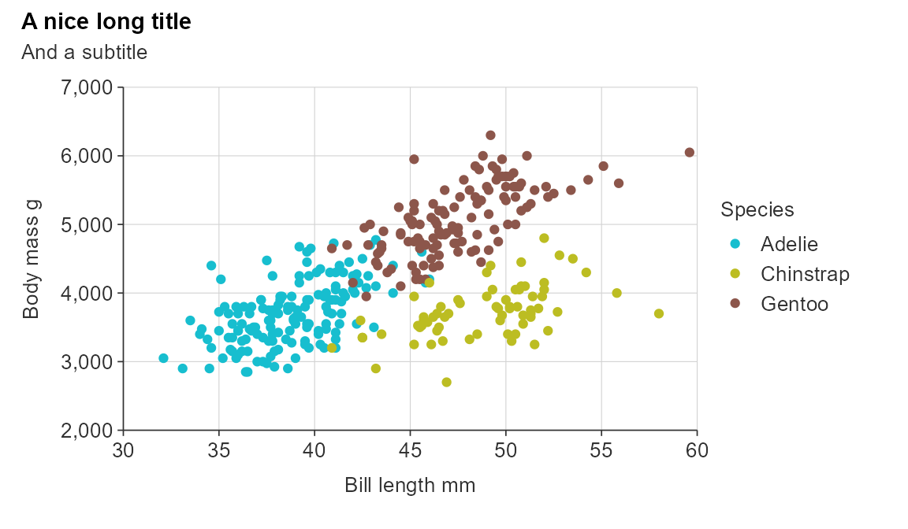
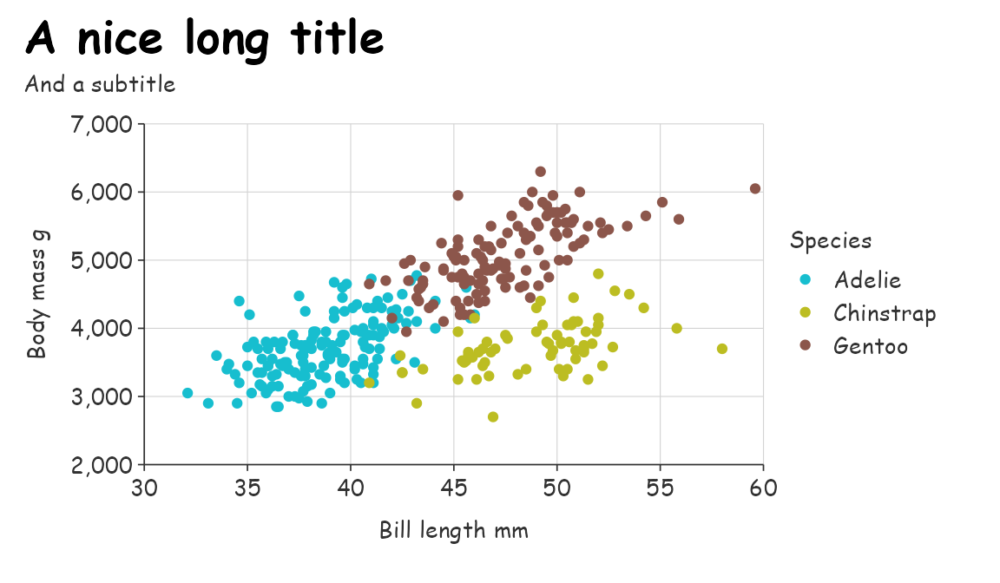
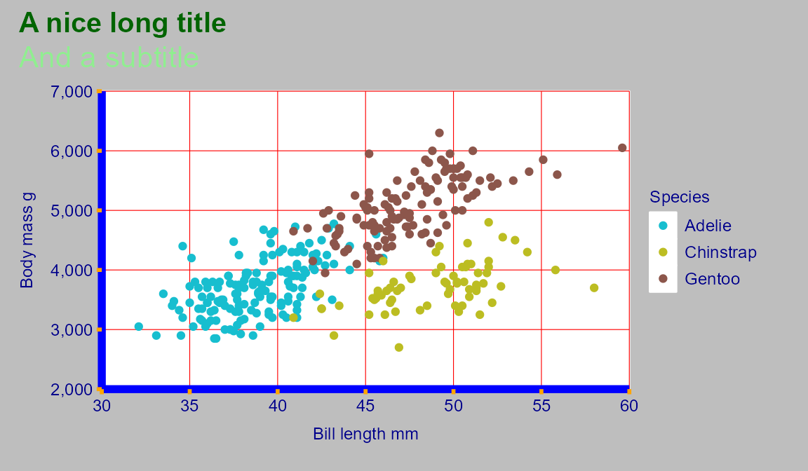
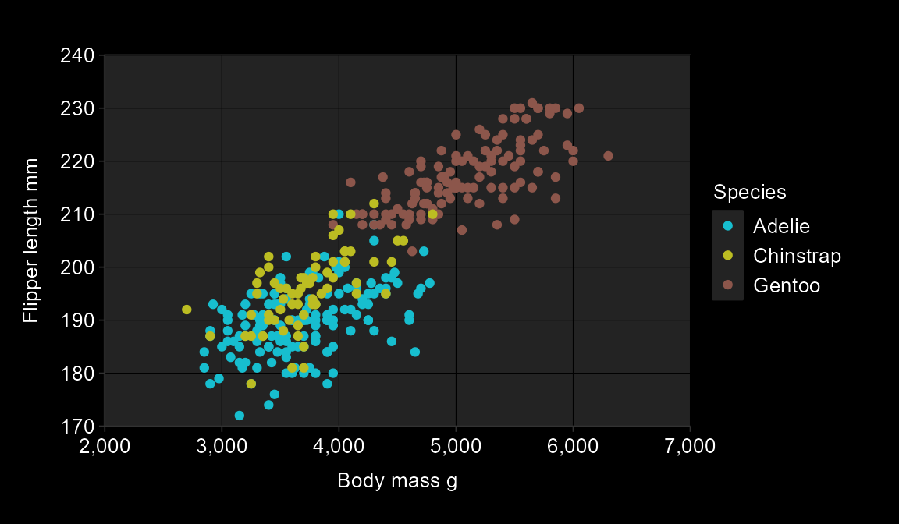
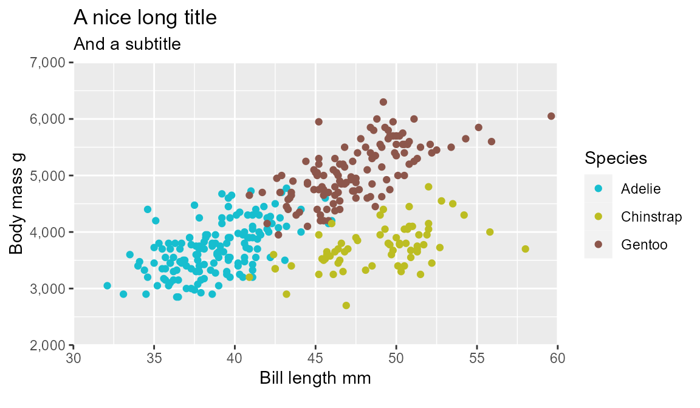
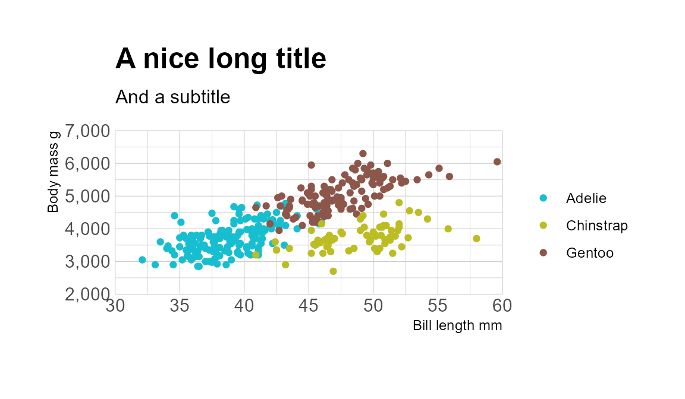

All plots have the same default undelying simplevis themes.
gg_point_col(penguins,
x_var = bill_length_mm,
y_var = body_mass_g,
col_var = species,
title = "A nice long title",
subtitle = "And a subtitle")
A gg_theme function is provided to quickly create a theme.
gg_point_col(penguins,
x_var = bill_length_mm,
y_var = body_mass_g,
col_var = species,
title = "A nice long title",
subtitle = "And a subtitle",
theme = gg_theme(
font = "comic sans ms",
size_title = 20,
gridlines_h = TRUE,
gridlines_v = TRUE)
) 
This has some flexibility.
Note colours are normally expressed as hex codes, but in this example are referred to by name to make it easier to see which colour relates to which components.
custom_theme <- gg_theme(
font = "lato",
size_title = 15,
size_subtitle = 16,
size_body = 9,
size_axis = 2,
size_gridlines = 0.2,
size_ticks = 1,
pal_title = "darkgreen",
pal_subtitle = "lightgreen",
pal_body = "darkblue",
pal_axis = "blue",
pal_ticks = "orange",
pal_gridlines = "red",
pal_background = c("white", "grey"),
gridlines_h = TRUE,
gridlines_v = TRUE
)
gg_point_col(penguins,
x_var = bill_length_mm,
y_var = body_mass_g,
col_var = species,
title = "A nice long title",
subtitle = "And a subtitle",
theme = custom_theme) 
Another example of a dark mode looking graph.
custom_theme <- gg_theme(
pal_body = "white",
pal_title = "white",
pal_subtitle = "white",
pal_background = c("#232323", "black"),
pal_gridlines = "black",
gridlines_h = TRUE,
gridlines_v = TRUE)
gg_point_col(penguins,
species,
x_var = body_mass_g,
y_var = flipper_length_mm,
theme = custom_theme)
Users can also create their own custom themes using the ggplot2::theme function, or use other themes that other packages provide.
gg_point_col(penguins,
x_var = bill_length_mm,
y_var = body_mass_g,
col_var = species,
title = "A nice long title",
subtitle = "And a subtitle",
theme = ggplot2::theme_grey())
gg_point_col(penguins,
x_var = bill_length_mm,
y_var = body_mass_g,
col_var = species,
title = "A nice long title",
subtitle = "And a subtitle",
col_title = "",
theme = hrbrthemes::theme_ipsum())
gg_point_col(penguins,
x_var = bill_length_mm,
y_var = body_mass_g,
col_var = species,
title = "A nice long title",
subtitle = "And a subtitle",
col_title = "",
pal = ggthemes::economist_pal(fill = FALSE)(3),
theme = ggthemes::theme_economist())